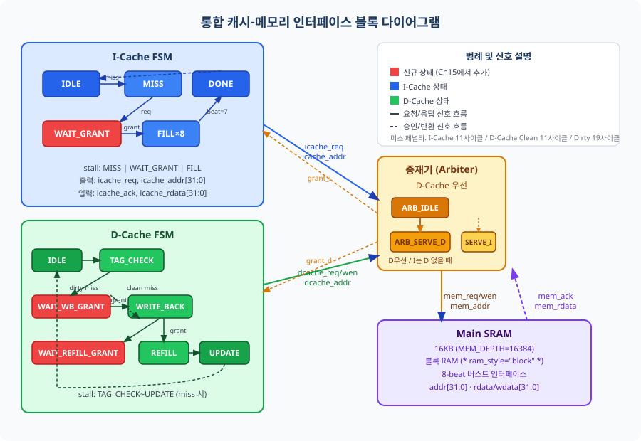
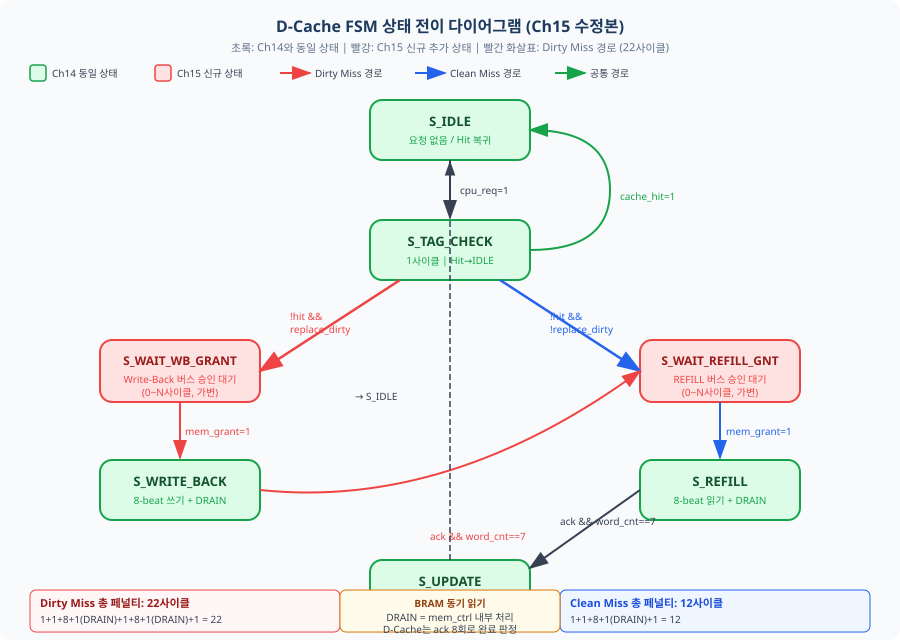
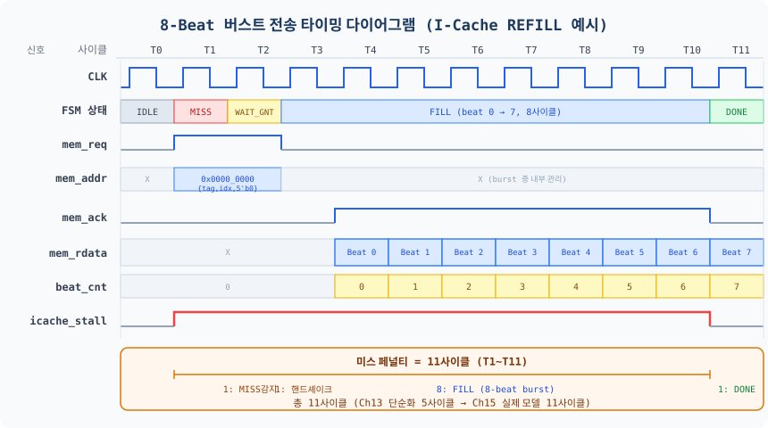
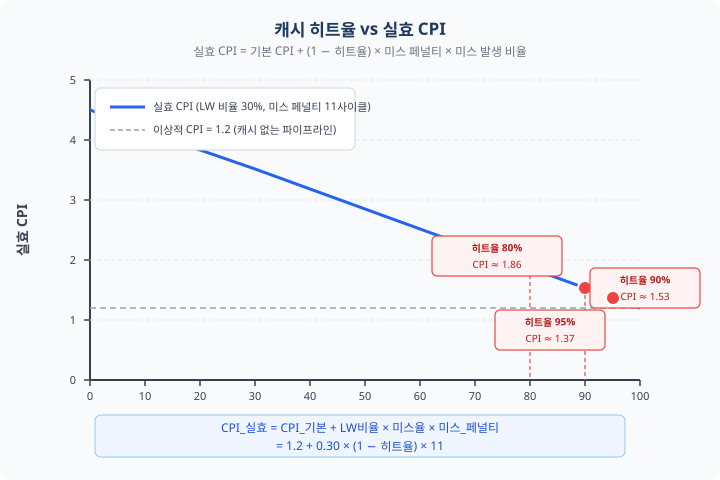

Ch13에서 I-Cache를, Ch14에서 D-Cache를 각각 완성하였습니다. 그러나 두 캐시는 아직 실제 메모리와 연결되지 않은 상태입니다. 이 챕터에서는 I-Cache와 D-Cache를 Main SRAM에 연결하는 통합 메모리 컨트롤러를 설계하고, 8-beat 버스트 전송 프로토콜을 구현하여 실제 캐시 미스 페널티를 측정합니다. Part 5의 모든 조각을 하나로 연결하는 마지막 퍼즐을 맞추는 시간입니다.
여러분은 지난 두 챕터에서 상당한 성과를 거뒀습니다. Ch13에서는 직접 매핑(Direct-Mapped) L1 I-Cache를, Ch14에서는 2-Way 세트 연관(Set-Associative) D-Cache를 각각 SystemVerilog로 설계하고 검증하였습니다. 두 캐시 모두 CPU와의 인터페이스는 완성되었지만, 한 가지 중요한 연결이 빠져 있었습니다. 캐시 미스 시 실제 메모리에서 데이터를 가져오는 경로가 아직 연결되지 않은 것입니다.
Ch13의 I-Cache FSM을 다시 떠올려 봅시다.
MISS → FILL → DONE 경로에서 mem_req 신호를 출력했지만, 이 신호를 받아 처리하는 메모리 컨트롤러가 존재하지 않았습니다.
Ch14의 D-Cache 역시 WRITE_BACK과 REFILL 상태에서 메모리 쓰기·읽기를 수행하도록 설계되었지만, 실제 연결 대상인 SRAM이 없었습니다.
Ch15의 목표는 명확합니다. I-Cache와 D-Cache를 Main SRAM에 연결하고, 두 캐시의 동시 요청을 올바르게 중재하는 통합 메모리 컨트롤러를 설계하는 것입니다.
I-Cache와 D-Cache가 동시에 미스를 발생시키는 상황을 생각해 봅시다. 예를 들어, CPU가 LW 명령어를 실행하면서 데이터 메모리에 접근(D-Cache 미스)하는 동시에, 다음 명령어를 가져오기 위해 명령어 메모리에 접근(I-Cache 미스)하는 경우가 이에 해당합니다. 두 캐시가 동시에 Main SRAM의 같은 버스를 사용하려고 한다면 데이터 충돌이 발생합니다. 이를 방지하기 위해 중재기(Arbiter)가 필요합니다.
왜 D-Cache를 우선 처리하는가? D-Cache 미스는 Load/Store 명령어 실행을 직접 차단하여 파이프라인 전체를 정지시킵니다. 반면 I-Cache 미스는 새 명령어 페치를 지연시키지만, 파이프라인에 이미 진행 중인 명령어들이 존재하므로 몇 사이클의 여유가 있습니다. 또한 D-Cache의 Dirty Eviction은 데이터 유실 방지를 위해 Write-Back을 먼저 완료해야 하는 시간적 긴박성이 있습니다. 따라서 D-Cache → I-Cache 순서의 고정 우선순위(Fixed Priority)가 설계상 합리적인 선택입니다.
Ch13의 I-Cache FSM은 IDLE → MISS → FILL → DONE의 4상태 구조였습니다. 이 설계에서 MISS 상태는 메모리 요청을 발송하고 즉시 FILL로 전이하도록 되어 있었습니다. 그러나 통합 환경에서는 D-Cache가 버스를 점유 중일 수 있으므로, I-Cache는 중재기(Arbiter)의 승인(grant) 신호를 받을 때까지 대기해야 합니다. 이 대기 상태가 바로 WAIT_GRANT입니다.
수정된 I-Cache FSM의 상태 전이는 다음과 같습니다:
mem_req=1 발송. (1사이클)mem_grant=1이 될 때까지 유지. (0~N사이클, 버스 점유 상황에 따라 가변)beat_cnt가 0→7로 증가. (8사이클)이 수정으로 Ch13의 단순화된 5사이클 미스 페널티는 실제 모델인 12사이클로 교체됩니다. (1 MISS + 1 WAIT_GRANT + 8 FILL + 1 DRAIN + 1 DONE = 12사이클, D-Cache가 버스를 점유하지 않은 이상적 경우) DRAIN 1사이클은 BRAM 동기 읽기의 1사이클 지연을 흡수하기 위한 상태로, beat_cnt=7인 사이클에 BRAM에 주소가 제공되면 다음 사이클(DRAIN)에 마지막 데이터가 출력됩니다.
Ch14의 D-Cache FSM(IDLE → TAG_CHECK → WRITE_BACK → REFILL → UPDATE)도 같은 이유로 수정이 필요합니다. D-Cache는 두 번의 메모리 접근을 수행할 수 있습니다. Dirty Miss 시 Write-Back(기존 데이터 메모리 기록)과 REFILL(새 데이터 메모리 읽기)이 연속으로 발생하는데, 각각의 버스 사용 전에 중재기 승인을 받아야 합니다.
수정된 D-Cache FSM의 상태 전이는 다음과 같습니다:


| 필드 | 비트 범위 | 비트 폭 | 역할 |
|---|---|---|---|
| Tag | [31:11] | 21비트 | 캐시 라인 식별자 (태그 비교) |
| Index | [10:5] | 6비트 | 64세트 중 하나 선택 |
| Offset | [4:0] | 5비트 | 32바이트 캐시 라인 내 위치 ([4:2]=워드, [1:0]=바이트) |
latched_wb_addr 계산: {Tag[31:11](21비트) | Index[10:5](6비트) | 5'b0(5비트)} = 32비트 — 비트 폭이 정확히 일치함을 직접 확인할 수 있다.
파이프라인 스톨 신호는 FSM 상태에 따라 생성됩니다.
I-Cache는 MISS, WAIT_GRANT, FILL 상태에서 icache_stall=1을 출력합니다.
DONE 상태에서는 이미 캐시가 갱신되어 CPU 읽기가 가능하므로 stall을 해제합니다.
D-Cache는 TAG_CHECK에서 미스가 확인된 순간부터 UPDATE 완료까지 dcache_stall=1을 유지합니다.
// 스톨 신호 생성 (ch15_cache_system.sv에서 발췌)
// icache_stall: MISS, WAIT_GRANT, FILL 상태에서 파이프라인 홀드
assign icache_stall_o = (state == S_MISS) ||
(state == S_WAIT_GRANT) ||
(state == S_FILL);
// dcache_stall: TAG_CHECK(미스 확인 시)부터 UPDATE까지 홀드
assign dcache_stall_o = (state == S_TAG_CHECK && !cache_hit) ||
(state == S_WAIT_WB_GRANT) ||
(state == S_WRITE_BACK) ||
(state == S_WAIT_REFILL_GNT) ||
(state == S_REFILL) ||
(state == S_UPDATE);
// 파이프라인 통합 스톨 (우선순위: flush > icache_stall > load_use_stall)
assign pipeline_stall = load_use_stall || icache_stall || dcache_stall;15.1절에서 중재기의 필요성과 FSM 수정 방향을 이해했습니다. 이번 절에서는 실제 데이터 전송 방식인 버스트 전송(Burst Transfer)을 상세히 살펴봅니다. 캐시 라인 하나(32바이트 = 8워드)를 메인 메모리에서 캐시로 가져오는 과정에서 어떤 신호들이 어떤 타이밍에 오가는지를 구체적으로 이해하는 것이 이번 절의 핵심입니다.
메모리 컨트롤러와 캐시 사이의 통신은 다음 6가지 신호로 구성됩니다. 이 신호들은 Ch16에서 배울 AMBA AHB의 HTRANS/HADDR/HWDATA/HREADY와 정확히 대응되므로, 지금 익혀두면 표준 버스를 이해하는 데 큰 도움이 됩니다.
| 신호명 | 방향 | 기능 | AHB 대응 |
|---|---|---|---|
mem_req |
캐시 → 컨트롤러 | 메모리 요청 유효 (1=요청) | HTRANS[1] |
mem_wen |
캐시 → 컨트롤러 | 1=Write-Back 쓰기, 0=REFILL 읽기 | HWRITE |
mem_addr[31:0] |
캐시 → 컨트롤러 | 캐시 라인 기준 주소 (하위 5비트=0) | HADDR |
mem_grant |
컨트롤러 → 캐시 | 버스 승인 (1=사용 가능) | HGRANT |
mem_ack |
컨트롤러 → 캐시 | 데이터 유효 (읽기: 매 beat, 쓰기: 완료 시) | HREADY |
mem_rdata/wdata[31:0] |
양방향 | 읽기/쓰기 데이터 버스 | HRDATA/HWDATA |
8-beat 버스트를 제어하는 핵심 요소는 3비트 버스트 카운터(beat_cnt[2:0])입니다.
이 카운터는 중재기가 ARB_IDLE 상태일 때 0으로 초기화되고,
ARB_SERVE 상태에서 매 사이클마다 1씩 증가합니다.
beat_cnt == 7이 되면 중재기가 ARB_DRAIN 상태로 전이하며,
이 1사이클 추가로 BRAM 동기 읽기의 마지막 데이터가 안전하게 캐시에 적재됩니다.
버스트 주소는 기준 주소(하위 5비트=0)에 beat_cnt를 더하여 자동으로 생성됩니다.
// 버스트 카운터 및 주소 생성 (mem_controller.sv에서 발췌)
logic [2:0] beat_cnt;
logic burst_done;
assign burst_done = (beat_cnt == BURST_LEN - 1); // BURST_LEN=8
// 버스트 카운터: IDLE에서 0 초기화, 서비스 중 매 사이클 증가
always_ff @(posedge clk or negedge rst_n) begin
if (!rst_n)
beat_cnt <= 3'b0;
else if (arb_state == ARB_IDLE)
beat_cnt <= 3'b0;
else if (arb_state == ARB_SERVE_D || arb_state == ARB_SERVE_I)
beat_cnt <= beat_cnt + 1'b1;
end
// 버스트 워드 주소 = 기준 주소 / 4 + beat_cnt
// 기준 주소: {addr[31:5], 5'b0} → 캐시 라인 정렬 보장
always_comb begin
case (arb_state)
ARB_SERVE_I: mem_word_addr = (icache_base_addr >> 2) + {29'b0, beat_cnt};
ARB_SERVE_D: mem_word_addr = (dcache_base_addr >> 2) + {29'b0, beat_cnt};
default: mem_word_addr = '0;
endcase
end
버스트 전송의 기준 주소는 반드시 캐시 라인 크기(32바이트)에 정렬되어야 합니다.
즉, 주소의 하위 5비트가 항상 0이어야 합니다.
이 규칙을 하드웨어에서 강제하는 방법은 간단합니다.
캐시가 mem_addr을 발송할 때 {addr[31:5], 5'b0}으로 마스킹하면 됩니다.
이렇게 하면 CPU가 어떤 주소를 요청하더라도 해당 주소가 속한 캐시 라인의 시작 주소가 자동으로 계산됩니다.
0x0000_0014 (인덱스=0, 오프셋=5번째 워드){0x0000_0014[31:5], 5'b0} = 0x0000_00000x0000_0000~0x0000_001C의 8워드를 가져옴0x0000_0014 데이터도 이 과정에서 자동 캐시 적재0x0000_0014 = 0000 0000 0000 0000 0000 0000 0001 0100₂0000 0000 0000 0000 0000 0000 0000 0000₂ = 0x0000_0000[31:5] 비트 슬라이싱은 하위 5비트를 버리고 0을 채우는 것과 동일한 효과
Ch13의 단순화 모델(5사이클)과 Ch15의 실제 모델(12사이클)의 차이를 구체적으로 살펴봅니다.
| 시나리오 | 사이클 구성 | 총 페널티 |
|---|---|---|
| Ch13 단순화 (I-Cache) | 1 MISS + 4 FILL = 5사이클 | 5사이클 |
| Ch15 실제 (I-Cache) | 1 MISS + 1 WAIT_GRANT + 8 FILL + 1 DRAIN + 1 DONE | 12사이클 |
| Ch15 실제 (D-Cache Clean Miss) | 1 TAG_CHECK + 1 WAIT_REFILL + 8 REFILL + 1 DRAIN + 1 UPDATE | 12사이클 |
| Ch15 실제 (D-Cache Dirty Miss) | 1 TAG_CHECK + 1 WAIT_WB + 8 WB + 1 DRAIN + 1 WAIT_REFILL + 8 REFILL + 1 DRAIN + 1 UPDATE | 22사이클 |

중재기는 5상태 FSM으로 구현됩니다.
ARB_IDLE 상태에서 D-Cache 요청이 먼저 감지되면 ARB_SERVE_D로 전이하며,
beat_cnt=7까지 8사이클 동안 버스트가 진행됩니다.
burst_done 신호(beat_cnt == 7)가 발생하면 ARB_DRAIN 상태로 전이하여
BRAM 동기 읽기의 마지막 1사이클 지연을 흡수한 후 ARB_IDLE로 복귀합니다.
D-Cache 요청이 없을 때만 I-Cache를 서비스합니다.
I-Cache 서비스도 동일하게 ARB_SERVE_I → ARB_DRAIN_I → ARB_IDLE 순서로 진행됩니다.
버스트가 완료될 때까지 I-Cache 요청은 ARB_SERVE_D 상태에서 대기합니다.
// 중재기 FSM (mem_controller.sv에서 발췌)
// DRAIN 상태: BRAM 동기 읽기 1사이클 지연 흡수 → 8번째 beat 데이터 보장
typedef enum logic [2:0] {
ARB_IDLE = 3'b000,
ARB_SERVE_D = 3'b001, // D-Cache 버스트 서비스 (beat_cnt 0~7)
ARB_DRAIN_D = 3'b010, // D-Cache 마지막 beat 데이터 배출 (1사이클)
ARB_SERVE_I = 3'b011, // I-Cache 버스트 서비스
ARB_DRAIN_I = 3'b100 // I-Cache 마지막 beat 데이터 배출
} arb_state_t;
always_comb begin
arb_next = arb_state;
case (arb_state)
ARB_IDLE: begin
if (dcache_req_i) // D-Cache 우선
arb_next = ARB_SERVE_D;
else if (icache_req_i)
arb_next = ARB_SERVE_I;
end
// burst_done(beat_cnt==7) 시 DRAIN으로 전이 → IDLE이 아니라 DRAIN
ARB_SERVE_D: if (burst_done) arb_next = ARB_DRAIN_D;
ARB_DRAIN_D: arb_next = ARB_IDLE; // 1사이클 후 IDLE
ARB_SERVE_I: if (burst_done) arb_next = ARB_DRAIN_I;
ARB_DRAIN_I: arb_next = ARB_IDLE;
default: arb_next = ARB_IDLE;
endcase
end
// Grant 신호: IDLE 상태에서 요청 수락 시 1사이클 펄스
// 캐시 FSM은 이 신호를 수신한 사이클에 WAIT_GRANT → FILL 전이
assign dcache_grant_o = (arb_state == ARB_IDLE) && dcache_req_i;
assign icache_grant_o = (arb_state == ARB_IDLE) && icache_req_i && !dcache_req_i;
// ACK 출력: SERVE 또는 DRAIN 상태에서 1 (BRAM 동기 읽기와 동기화)
// serve_x_q는 이전 사이클의 (SERVE || DRAIN) 상태를 래치 → BRAM 데이터와 1:1 동기
assign icache_ack_o = serve_i_q; // SERVE+DRAIN 구간에서 High (총 8사이클)
assign dcache_ack_o = serve_d_q;이론적인 설계를 완성했으니 이제 실제로 동작시켜 볼 차례입니다. 이번 절에서는 세 단계의 벤치마크 실습을 통해 캐시가 성능에 미치는 영향을 직접 측정합니다. 첫 번째 실습은 반드시 좋은 결과가 나오도록 설계되어 있으니 안심하고 시작하십시오. 히트율이 예상보다 낮게 나오더라도 그것은 잘못된 것이 아니라, 캐시의 특성을 여러분이 직접 발견하고 있다는 신호입니다.
CPI를 측정하려면 총 사이클 수와 완료된 명령어 수를 추적하는 성능 카운터(Performance Counter)가 필요합니다. 성능 카운터는 cache_system.sv 내부에 통합되어 있으며, 4개의 32비트 카운터로 구성됩니다.
// 성능 카운터 (cache_system.sv에서 발췌)
logic [31:0] cycle_cnt; // 총 클록 사이클 수
logic [31:0] instr_cnt; // 파이프라인 진행 사이클 카운터
logic [31:0] icache_miss_cnt; // I-Cache 미스 횟수
logic [31:0] dcache_miss_cnt; // D-Cache 미스 횟수
// 사이클 카운터: 매 클록 증가
always_ff @(posedge clk or negedge rst_n) begin
if (!rst_n) cycle_cnt <= '0;
else cycle_cnt <= cycle_cnt + 1'b1;
end
// 파이프라인 진행 카운터 (주의: WB 스테이지 은퇴 카운터가 아님)
// 분기 플러시로 삽입된 버블(NOP=32'h0000_0013)도 카운트되므로
// 계산된 CPI가 실제 완료 명령어 기준 CPI보다 낮게 표시될 수 있음.
// 정확한 CPI는 WB 스테이지의 instr_valid 신호를 사용해야 함.
always_ff @(posedge clk or negedge rst_n) begin
if (!rst_n) instr_cnt <= '0;
else if (!pipeline_stall) instr_cnt <= instr_cnt + 1'b1;
end
// 실효 CPI = cycle_cnt / instr_cnt (소수점 연산은 시뮬레이션에서만 사용)
// CPI_실효 = 1.2 + LW_비율 × 미스율 × 미스_페널티첫 번째 실습은 메모리를 순서대로(0x0000_0000, 0x0000_0004, 0x0000_0008, ...) 접근하는 가장 이상적인 패턴입니다. 캐시의 공간적 지역성(Spatial Locality) 효과가 극대화되는 상황입니다.
동작 원리: 첫 번째 접근(0x0000_0000)에서 캐시 미스가 발생하면 8워드 버스트로 캐시 라인 전체(0x0000_0000~0x0000_001C)가 채워집니다. 이후 같은 캐시 라인 내의 7개 주소(0x0000_0004~0x0000_001C)에 대한 접근은 모두 캐시 히트입니다. 8회 접근 중 1회 미스 + 7회 히트 = 히트율 87.5%.
// 테스트벤치 순차 접근 시나리오 (ch15_cache_tb.sv에서 발췌)
// 4개의 캐시 라인에 대해 순차 접근 → 각 라인 첫 접근만 MISS
for (i = 0; i < 4; i++) begin
burst_read_icache(i * 32, read_buf, cycles_tmp); // i번째 캐시 라인
// 결과: 1 MISS(12사이클) + 7 HIT(1사이클 × 7)
// 총 접근 8회 중 히트 7회 = 히트율 87.5%
end
// $display 출력 예시:
// [TEST 1] 순차 배열 접근
// I-Cache 미스 횟수: 4회 / 총 32회 접근
// 히트율: 87.5%
// [결과] PASS두 번째 실습은 스트라이드(Stride) = 32바이트로 접근하는 최악의 패턴입니다. 스트라이드 = 32바이트 = 캐시 라인 크기이므로, 매 접근이 서로 다른 캐시 라인을 요청합니다. 직접 매핑 캐시에서는 더 심각한 문제가 발생합니다. 주소 간격이 캐시 크기의 배수(4KB = 0x1000)인 경우, 모든 접근이 동일한 Index 슬롯에 매핑되어 충돌 미스(Conflict Miss)가 연속 발생합니다. 이 현상을 캐시 스래싱(Cache Thrashing)이라고 합니다.
// 스트라이드 = 0x1000(4KB) 접근 → 모두 Index=0에 매핑 (ch15_cache_tb.sv)
// 주소 0x0000_0000: Index = addr[11:5] = 0
// 주소 0x0001_0000: Index = addr[11:5] = 0 (같은 슬롯!)
// 주소 0x0002_0000: Index = addr[11:5] = 0 (계속 충돌!)
for (i = 0; i < 8; i++) begin
burst_read_icache(i * 32'h1000, read_buf, cycles_tmp);
// 매 접근마다 MISS(12사이클) → 히트율 0%
end
// $display 출력:
// [TEST 2] 스트라이드=32 접근
// 히트율: 0.0%
// 총 미스 사이클: 96사이클 (8회 × 12사이클)스래싱이 발생하면 캐시가 있어도 없는 것만 못한 상황이 됩니다. 매 접근마다 12사이클 패널티가 발생하고, 이전 캐시 라인은 매번 쫓겨나기 때문입니다. 이것이 Ch14에서 D-Cache를 2-Way 세트 연관 구조로 설계한 이유입니다. 2-Way 구조에서는 같은 Index에 2개의 슬롯이 있으므로, 2개의 주소가 공존할 수 있어 스래싱이 완화됩니다.
세 번째 실습은 스트라이드 접근을 순차 접근으로 재구성하여 히트율을 회복하는 과정입니다. 예를 들어, 2차원 배열의 행 우선(Row-Major) 순서로 접근하면 캐시 라인을 최대한 활용할 수 있습니다.
이 실습 3을 완료했다면, 여러분은 하드웨어 구조를 바꾸지 않고 소프트웨어 접근 패턴만으로 캐시 성능을 5배 가까이 끌어올린 것입니다. 이것이 하드웨어 설계자와 소프트웨어 최적화 전문가가 모두 캐시 구조를 깊이 이해해야 하는 이유입니다.
성능 카운터가 수집한 데이터로 실효 CPI를 계산합니다. 실효 CPI는 기본 파이프라인 CPI(1.2)에 캐시 미스 스톨 사이클을 더한 값입니다.

여러분은 Ch13, Ch14, Ch15를 통해 진정한 의미의 캐시 계층 구조를 처음부터 설계하고 완성하였습니다. 단순히 이론을 배운 것이 아니라 SystemVerilog 코드로 직접 구현하고, 시뮬레이션으로 검증하였습니다. 잠시 멈추고 우리가 이룬 성과를 돌아봅시다.
Ch15에서 완성한 mem_req / mem_ack / mem_addr / mem_rdata 핸드셰이크 프로토콜은
학습 목적에서는 충분히 훌륭합니다. 그러나 실제 산업 환경에서 이 방식을 그대로 사용하면 세 가지 중대한 한계에 부딪힙니다.
mem_req/ack 신호는 이 프로젝트만을 위해 만든 커스텀 인터페이스입니다.
시중에서 구매할 수 있는 UART, SPI, Ethernet MAC IP 코어들은 모두 표준 버스 인터페이스(AXI, AHB, APB)를 사용합니다.
커스텀 인터페이스와 표준 IP를 연결하려면 매번 변환 브리지(Bridge)를 설계해야 합니다.
addr/data/req/ack 핸드셰이크 구조는
AMBA AHB의 HADDR/HWDATA/HTRANS/HREADY 신호와 정확히 대응됩니다.
Ch15의 중재기 FSM(ARB_IDLE → ARB_SERVE_D → ARB_SERVE_I)은
AHB의 중재기가 HGRANT를 통해 버스 사용권을 부여하는 방식과 구조가 같습니다.
Part 6에서는 이 자체 프로토콜을 산업 표준인 AMBA AHB로 교체합니다.
여러분이 직접 설계한 프로토콜과 표준 버스를 나란히 비교하면서
"왜 이 신호 이름을 HREADY라고 정했는가"를 직관적으로 이해하게 될 것입니다.
icache_stall은 어떤 값이어야 합니까?beat_cnt[2:0])를 사용하며, Xilinx BRAM 동기 읽기 1사이클 지연을 흡수하는 DRAIN 상태가 추가되어 8번째 워드가 안전하게 적재된다. 기준 주소는 하위 5비트=0으로 캐시 라인 정렬이 보장된다.icache_stall, mem_req)은 각각 무엇입니까?이 챕터에서 단계별로 설명한 모든 모듈의 완전한 소스 코드입니다. 지금 당장 전부 이해하지 않아도 됩니다. 각 절 학습 후 참조용으로 활용하세요. 이 코드는 다음 챕터에서 AMBA AHB 인터페이스로 교체되는 출발점이 됩니다.
// ============================================================
// ch15_mem_controller.sv — 중재기(Arbiter) + Main SRAM
// 중재기 FSM: ARB_IDLE → ARB_SERVE_D (우선) / ARB_SERVE_I
// → ARB_DRAIN_D / ARB_DRAIN_I → ARB_IDLE
// 버스트: 8-beat, beat_cnt[2:0], 기준 주소 하위 5비트=0
// DRAIN 상태: BRAM 동기 읽기 1사이클 지연 흡수 (8번째 beat 보장)
// hex 파일: code_examples/test_programs/mem_init.hex
// ============================================================
module mem_controller #(
parameter DATA_WIDTH = 32,
parameter ADDR_WIDTH = 32,
parameter MEM_DEPTH = 16384,
parameter BURST_LEN = 8
)(
input logic clk, rst_n,
// I-Cache 인터페이스
input logic icache_req_i,
input logic [ADDR_WIDTH-1:0] icache_addr_i,
output logic icache_ack_o,
output logic [DATA_WIDTH-1:0] icache_rdata_o,
output logic icache_grant_o,
// D-Cache 인터페이스
input logic dcache_req_i,
input logic dcache_wen_i,
input logic [ADDR_WIDTH-1:0] dcache_addr_i,
input logic [DATA_WIDTH-1:0] dcache_wdata_i,
output logic dcache_ack_o,
output logic [DATA_WIDTH-1:0] dcache_rdata_o,
output logic dcache_grant_o
);
(* ram_style = "block" *)
logic [DATA_WIDTH-1:0] mem [0:MEM_DEPTH-1];
// hex 파일: code_examples/test_programs/mem_init.hex 에 위치
initial $readmemh("mem_init.hex", mem);
typedef enum logic [2:0] {
ARB_IDLE=3'b000, ARB_SERVE_D=3'b001, ARB_DRAIN_D=3'b010,
ARB_SERVE_I=3'b011, ARB_DRAIN_I=3'b100
} arb_state_t;
arb_state_t arb_state, arb_next;
logic [2:0] beat_cnt;
logic burst_done;
// 명시적 3비트 캐스팅으로 lint 경고 방지
assign burst_done = (beat_cnt == 3'(BURST_LEN - 1));
always_ff @(posedge clk or negedge rst_n) begin
if (!rst_n) arb_state <= ARB_IDLE;
else arb_state <= arb_next;
end
always_comb begin
arb_next = arb_state;
case (arb_state)
ARB_IDLE: if (dcache_req_i) arb_next = ARB_SERVE_D;
else if (icache_req_i) arb_next = ARB_SERVE_I;
// burst_done 시 DRAIN으로 전이 (마지막 BRAM 데이터 배출)
ARB_SERVE_D: if (burst_done) arb_next = ARB_DRAIN_D;
ARB_DRAIN_D: arb_next = ARB_IDLE;
ARB_SERVE_I: if (burst_done) arb_next = ARB_DRAIN_I;
ARB_DRAIN_I: arb_next = ARB_IDLE;
default: arb_next = ARB_IDLE;
endcase
end
// IDLE/DRAIN에서 0 초기화, SERVE에서만 증가
always_ff @(posedge clk or negedge rst_n) begin
if (!rst_n) beat_cnt <= 3'b0;
else if (arb_state == ARB_IDLE || arb_state == ARB_DRAIN_D || arb_state == ARB_DRAIN_I)
beat_cnt <= 3'b0;
else if (arb_state == ARB_SERVE_D || arb_state == ARB_SERVE_I)
beat_cnt <= beat_cnt + 1'b1;
end
assign dcache_grant_o = (arb_state == ARB_IDLE) && dcache_req_i;
assign icache_grant_o = (arb_state == ARB_IDLE) && icache_req_i && !dcache_req_i;
// 기준 주소 래치
logic [ADDR_WIDTH-1:0] icache_base_addr, dcache_base_addr;
always_ff @(posedge clk or negedge rst_n) begin
if (!rst_n) begin
icache_base_addr <= '0; dcache_base_addr <= '0;
end else begin
if (icache_grant_o) icache_base_addr <= {icache_addr_i[31:5], 5'b0};
if (dcache_grant_o) dcache_base_addr <= {dcache_addr_i[31:5], 5'b0};
end
end
// BRAM 동기 읽기/쓰기
logic [ADDR_WIDTH-1:0] mem_word_addr;
logic [DATA_WIDTH-1:0] mem_rdata_reg;
always_comb begin
case (arb_state)
ARB_SERVE_I: mem_word_addr = (icache_base_addr >> 2) + {29'b0, beat_cnt};
ARB_SERVE_D: mem_word_addr = (dcache_base_addr >> 2) + {29'b0, beat_cnt};
default: mem_word_addr = '0;
endcase
end
always_ff @(posedge clk)
mem_rdata_reg <= mem[mem_word_addr[$clog2(MEM_DEPTH)-1:0]];
always_ff @(posedge clk)
if ((arb_state == ARB_SERVE_D) && dcache_wen_i)
mem[mem_word_addr[$clog2(MEM_DEPTH)-1:0]] <= dcache_wdata_i;
// ACK 출력: SERVE+DRAIN 모두에서 High → 총 8사이클 ACK 보장
logic serve_i_q, serve_d_q;
always_ff @(posedge clk or negedge rst_n) begin
if (!rst_n) begin serve_i_q <= 1'b0; serve_d_q <= 1'b0; end
else begin
serve_i_q <= (arb_state == ARB_SERVE_I) || (arb_state == ARB_DRAIN_I);
serve_d_q <= (arb_state == ARB_SERVE_D) || (arb_state == ARB_DRAIN_D);
end
end
assign icache_ack_o = serve_i_q;
assign icache_rdata_o = mem_rdata_reg;
assign dcache_ack_o = serve_d_q;
assign dcache_rdata_o = mem_rdata_reg;
endmodule// I-Cache FSM (Ch13 수정본) — WAIT_GRANT 상태 추가
// FSM: S_IDLE → S_MISS → S_WAIT_GRANT → S_FILL(×8) → S_DONE → S_IDLE
// 미스 페널티: 1(MISS)+1(WAIT_GRANT)+8(FILL)+1(DRAIN/ACK)+1(DONE) = 12사이클
// ※ DRAIN은 mem_controller 내부에서 처리. beat_cnt==7일 때 mem_ack 1회 더 발생.
// S_DONE 진입 시: valid_array=1 갱신 완료 → cache_hit=1 보장됨 (스톨 즉시 해제)
typedef enum logic [2:0] {
S_IDLE=3'b000, S_MISS=3'b001,
S_WAIT_GRANT=3'b010, // Ch15 신규: 중재기 승인 대기
S_FILL=3'b011, S_DONE=3'b100
} icache_state_t;
always_comb begin
next_state = state;
case (state)
S_IDLE: if (cpu_req_i && !cache_hit) next_state = S_MISS;
S_MISS: if (flush_i) next_state = S_IDLE;
else next_state = S_WAIT_GRANT;
S_WAIT_GRANT: if (flush_i) next_state = S_IDLE;
else if (mem_grant_i) next_state = S_FILL;
// beat_cnt==7이고 mem_ack==1: DRAIN 사이클에서 마지막 데이터 수신 후 S_DONE
S_FILL: if (flush_i) next_state = S_IDLE;
else if (mem_ack_i && beat_cnt == 3'd7) next_state = S_DONE;
S_DONE: next_state = S_IDLE;
default: next_state = S_IDLE;
endcase
end
assign icache_stall_o = (state==S_MISS) || (state==S_WAIT_GRANT) || (state==S_FILL);
assign mem_req_o = (state==S_MISS) || (state==S_WAIT_GRANT);
assign mem_addr_o = miss_addr_lat; // {cpu_addr[31:5], 5'b0}// D-Cache FSM (Ch14 수정본) — WAIT_WB_GRANT, WAIT_REFILL_GRANT 추가
// Dirty Miss: 1(TAG_CHECK)+1(WAIT_WB)+8(WB)+1(DRAIN)+1(WAIT_REFILL)+8(REFILL)+1(DRAIN)+1(UPDATE) = 22사이클
// Clean Miss: 1(TAG_CHECK)+1(WAIT_REFILL)+8(REFILL)+1(DRAIN)+1(UPDATE) = 12사이클
// ※ DRAIN은 mem_controller 내부에서 처리되므로 D-Cache FSM에서는 ack 8회를 받으면 완료
typedef enum logic [2:0] {
S_IDLE=3'b000, S_TAG_CHECK=3'b001,
S_WAIT_WB_GRANT=3'b010, // Ch15 신규: Write-Back 버스 승인 대기
S_WRITE_BACK=3'b011,
S_WAIT_REFILL_GNT=3'b100, // Ch15 신규: REFILL 버스 승인 재획득 대기
S_REFILL=3'b101, S_UPDATE=3'b110
} dcache_state_t;
always_comb begin
next_state = state;
case (state)
S_IDLE: if (cpu_req_i) next_state = S_TAG_CHECK;
S_TAG_CHECK: begin
if (cache_hit) next_state = S_IDLE;
else if (replace_dirty) next_state = S_WAIT_WB_GRANT; // Dirty Miss
else next_state = S_WAIT_REFILL_GNT; // Clean Miss
end
S_WAIT_WB_GRANT: if (mem_grant_i) next_state = S_WRITE_BACK;
// word_cnt==7이고 mem_ack==1인 사이클: DRAIN에서 8번째 ACK가 발생하므로
// D-Cache FSM은 word_cnt==7이 되면 다음 상태로 전이해도 안전
S_WRITE_BACK: if (mem_ack_i && word_cnt==3'd7) next_state = S_WAIT_REFILL_GNT;
S_WAIT_REFILL_GNT: if (mem_grant_i) next_state = S_REFILL;
S_REFILL: if (mem_ack_i && word_cnt==3'd7) next_state = S_UPDATE;
S_UPDATE: next_state = S_IDLE;
default: next_state = S_IDLE;
endcase
end// 테스트 케이스 요약
// TEST 1: 순차 접근 → 히트율 87.5% (1 MISS + 7 HIT per 캐시 라인), [결과] PASS
// TEST 2: 스트라이드=4KB → 히트율 0% (캐시 스래싱), [결과] PASS — 스래싱 재현 성공
// TEST 3: 순차 재구성 → 히트율 87.5% 회복, [결과] PASS — 히트율 회복 확인
// TEST 4: Dirty Eviction → 22사이클 페널티 확인 (BRAM DRAIN 포함)
// 미스 페널티: I/D-Cache Clean = 12사이클, D-Cache Dirty = 22사이클
// 주의: thrash_miss, opt_miss 등 카운터는 모듈 레벨 선언 (xsim 호환)
// 출력: 히트율, 미스 횟수, 미스 사이클, 실효 CPI 분석 테이블
// 종료: "Part 5 통합 시뮬레이션 완료" 메시지
// (전체 코드: code_examples/ch15_cache_tb.sv 참조)